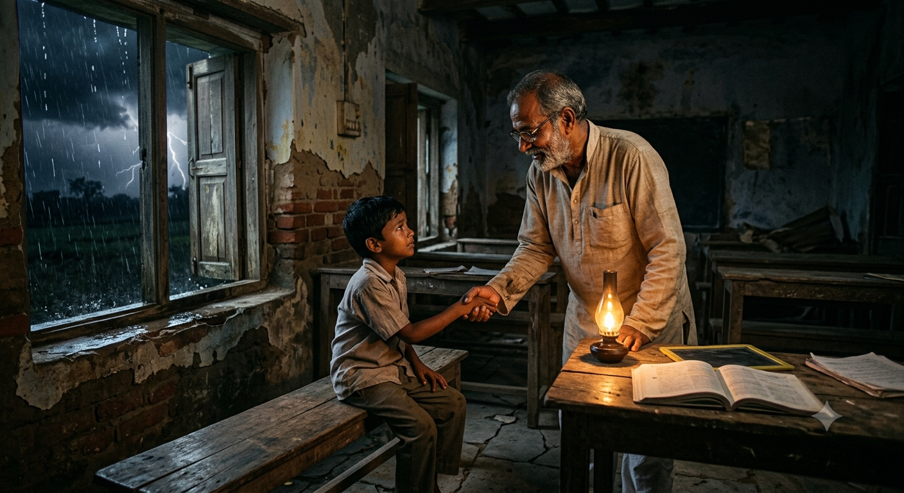
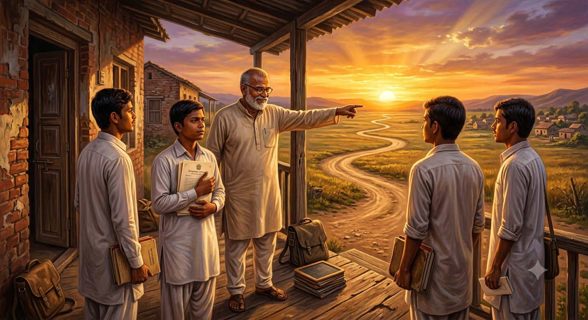

मार्ग: ज्ञान और प्रकाश
अध्याय 1: तूफ़ान में जलता हुआ दीप

आकाश में काले बादलों की घनी परत बिछी हुई थी, और दूर क्षितिज पर बिजली कौंध रही थी। शहर के उस आख़िरी कोने में बने जर्जर स्कूल के बनामदे में 'मास्टरजी' चुपचाप खड़े थे। उधड़े हुए प्लास्टर वाली दीवारें और टूटी हुई बेंचें इस बात की गवाही दे रही थीं कि इस जगह को समाज ने बहुत पहले 'नाक़ाबिल' मानकर छोड़ दिया था।
यह शहर का वही 'ई-क्लास' था, जहाँ उन बच्चों को फेंक दिया जाता था, जिन्हें हर किसी ने 'ज़ीरो' घोषित कर दिया था। कोई ग़रीबी के दलदल से उठकर आया था, तो कोई पारिवारिक परिस्थितियों का मारा हुआ। दुनिया कहती थी—“ये बच्चे कभी कुछ नहीं बन सकते।”
लेकिन मास्टरजी की आँखों में हताशा नहीं, एक गहरा संकल्प था। उनके लिए ज्ञान केवल किताबी अक्षरों का जाल नहीं था; वह तो आत्मा को गढ़ने का एक पवित्र माध्यम था।
“गुरुजी,” पीछे से एक छोटे लड़के की धीमी आवाज़ आई। “सब कहते हैं कि हम कभी पास नहीं होंगे। क्या हम सच में इतने बुरे हैं?”
अध्याय 2: सोए हुए ज़मीर की दस्तक

सुबह की पहली किरण जब जर्जर स्कूल की खिड़कियों से छनकर अंदर आई, तो धूल के कण हवा में तैरते हुए दिखाई दे रहे थे। कल रात का तूफ़ान तो थम चुका था, लेकिन शहर के लोगों के दिलों में जमा हुआ उपेक्षा का तूफ़ान अब भी जारी था।
अध्याय 3: गुरु-द्रोह और विश्वास की कसौटी

ट्रस्टी के जाने के बाद स्कूल में दिन बीतने लगे, लेकिन एक अनजाना ख़तरा मंडरा रहा था। मास्टरजी की लगन रंग ला रही थी—जो बच्चे कभी अक्षरों से डरते थे, अब वे देर रात तक दीये की रोशनी में गणित और विज्ञान के सूत्र सुलझाने लगे थे।
अध्याय 4: नए क्षितिज और निरंतर यात्रा

विक्रान्त के सच स्वीकारने और जाँच अधिकारी के जाने के बाद, उस जर्जर स्कूल की फ़िज़ा पूरी तरह बदल चुकी थी।